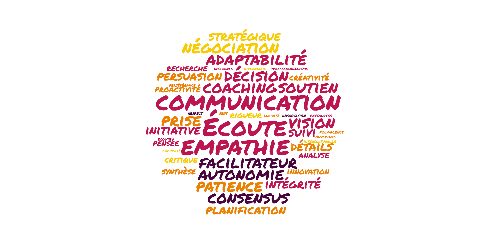

Mes compétences
Dans un monde toujours plus digital, les compétences humaines,
les soft skills sont plus que jamais importantes et décisives.

L'ensemble des compétences douces acquises durant mon parcours
| Relationnelles & Communication |
Gestion & Organisation |
Adaptabilité |
Ingéniosité |
Professionnalisme |
Fiabilité |
| Communication |
Gestion du temps |
Adaptabilité |
Pensée critique |
Enthousiasme |
Respect des délais |
| Écoute active / Empathie |
Organisation |
Résilience |
Résolution de problèmes |
Positivité |
Concentration |
| Politesse |
Prise de décision |
Autonomie |
Créativité |
Humilité |
Engagement |
| Authenticité |
Vision globale |
Initiative |
Curiosité |
Intelligence émotionnelle |
Attention aux détails |
| Négociation |
Pensée stratégique |
Patience |
Esprit d’analyse |
Intégrité |
Autodiscipline |
| Leadership |
Priorisation |
Polyvalence |
Capacité d’apprentissage |
Travail en équipe |
Rigueur |
| Coaching (état d’esprit) |
Planification |
Ouverture d’esprit |
Innovation |
Fiabilité |
|
| Influence |
Responsabilité |
Capacité d’adaptation interculturelle |
Esprit de synthèse |
Discrétion |
|
| Diplomatie |
Gestion de projet |
|
Capacité de recherche |
Persévérance |
|
| Collaboration / Esprit d’équipe |
Suivi des objectifs |
|
Observation / Sens de l’observation aiguë |
Proactivité |
|
| Consensus / Persuasion |
|
|
|
|
|
| Facilitateur / Soutien |
|
|
|
|
|